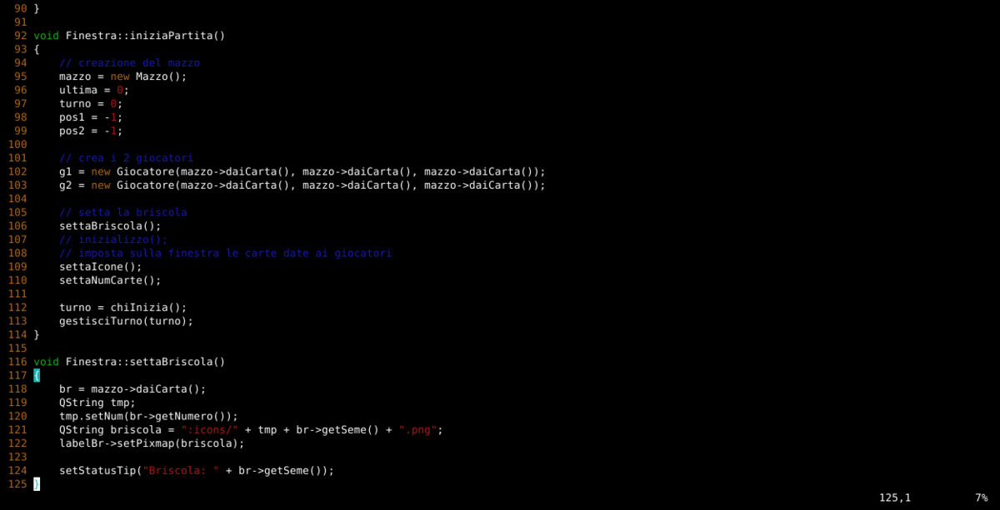
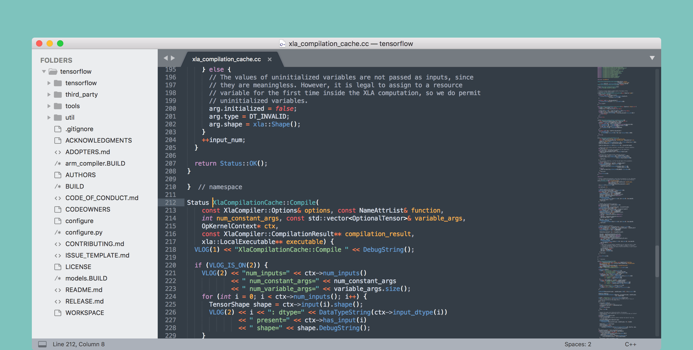
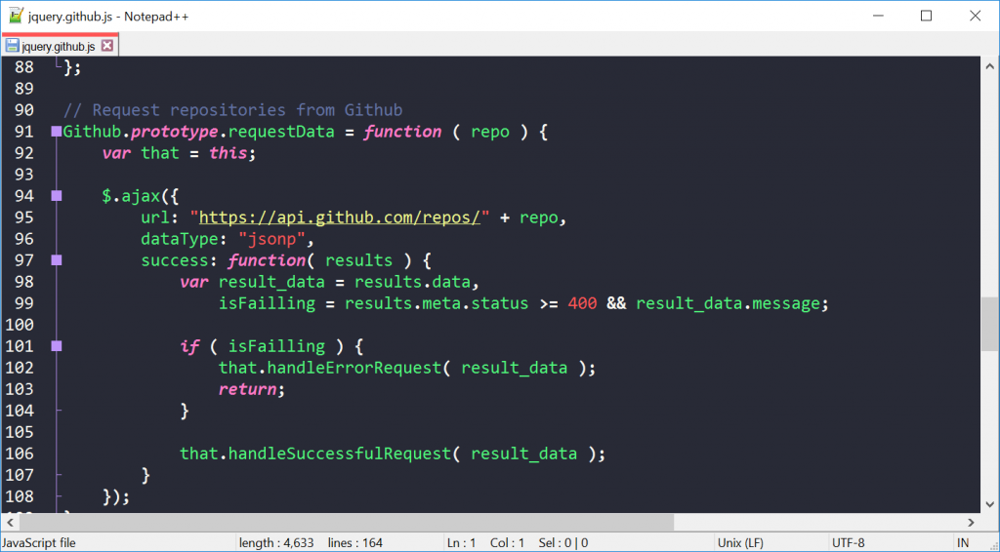

1. Vim
Vim, o Vi IMproved, è un editor di testo open source e multipiattaforma, nato per fornire una versione migliorata di Vi. La sua prima versione è stata scritta nel 1991 da Bram Moolenaar; le versioni successive hanno aggiunto numerose capacità, specialmente utili per la modifica di codice sorgente. Attualmente è molto diffuso tra programmatori ed utenti di sistemi operativi unix-like. Da Vi mantiene la caratteristica di essere modale, ovvero di avere modalità diverse nelle quali i normali caratteri della tastiera hanno significato di inserimento testo o di comandi. In questo modo, è possibile usarlo senza far uso del mouse, né dei tasti meta, permettendo una velocità maggiore di scrittura, a prezzo di maggiore difficoltà di utilizzo da parte di nuovi utenti.
 Download VIM2. VS code
Visual Studio Code è un editor di codice sorgente sviluppato da Microsoft per Windows, Linux e macOS. Include il supporto per debugging, un controllo per Git integrato, Syntax highlighting, IntelliSense, Snippet e refactoring del codice. Sono personalizzabili il tema dell'editor, le scorciatoie da tastiera e le preferenze. È un software libero e gratuito, anche se la versione ufficiale è sotto una licenza proprietaria. Visual Studio Code è basato su Electron, un framework con cui è possibile sviluppare applicazioni Node.js.
 Download VS CODE
Download VS CODE
3. Sublime text
Sublime Text è un editor di codice sorgente proprietario multipiattaforma con un'interfaccia API (application programming interface) Python. Supporta nativamente molti linguaggi di programmazione e linguaggi di markup e le funzioni possono essere aggiunte dagli utenti con plug-in, in genere creati dalla comunità e gestiti con licenze di software libero.
 Download SUBLIME4. Atom
Atom è un editor di testo e IDE open source e sviluppato da GitHub, rilasciato nel 2014. Esso è basato su Chromium ed è scritto in CoffeeScript, il che gli permette di essere eseguito su qualsiasi piattaforma supportata da Chromium.
 Download ATOM
Download ATOM
5. Notepad++
Notepad++ è un editor di testo libero per Windows. Il programma è stato creato da Don Ho e la prima versione venne pubblicata il 24 novembre 2003. Su SourceForge, dove per lungo tempo è stata ospitata la pagina web ufficiale di Notepad++, a giugno 2010 è risultato essere stato scaricato più di 25 milioni di volte. Dall'inizio del 2010, in base alle leggi statunitensi, SourceForge ha bloccato l'accesso al server da parte di paesi diversi dagli Stati Uniti. Attualmente è ospitato da un provider francese dove non esistono restrizioni sulla distribuzione di questo tipo. Dalla versione 7, uscita il 22 settembre 2016, il programma è disponibile anche nella versione a 64 bit.
 Download N++